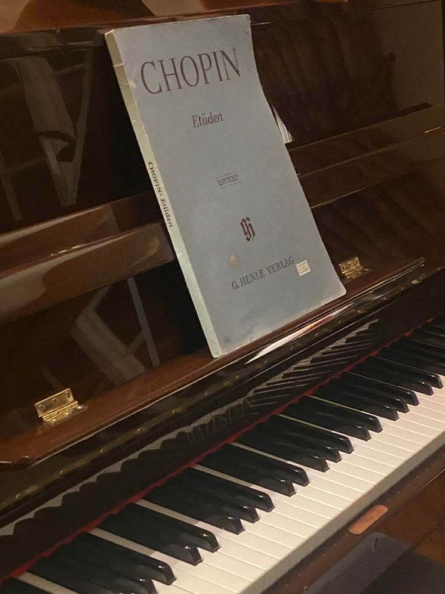

KLASİK MÜZİK NEDİR?

Klasik Batı Müziği, kökeni Antik Yunan müzik kültürüne dayandırılan, daha sonra Batı Roma İmparatorluğu'nun çöküşüyle başlayan Orta Çağ ve Gotik dönemde çok sesliliğin gelişimiyle beraber daha da biçimlenmiş, kilise ve saray baskısı altında Rönesans'ın erken yüzyılında vokal polifoni çerçevesi içinde gelişmiş, Yüksek Rönesans ile beraber çalgı müziğinin de yükselişiyle içeriği bugünün klasik müzik olarak adlandırılan biçimleri ve teknikleriyle gelişimini sürdürmüş bir kurumsal müziğin, kilise baskısına direnen halk müziğinin dans ve şarkı biçimleriyle karşılıklı etkileşimi sonucu gelişimini sürdürmüş olan, uluslararası olarak kabul görmüş müzik türüdür. En önemli özelliği, çok sesli ya da çok ezgili (polifonik) ve çok ritmli (poliritmik) olmasıdır.
Klasik Batı Müziği Dönemleri
Rönesans (1450–1600):
Yeniden doğuş (Fr. Re-naissance) anlamına gelen Rönesans, Orta Çağ döneminin çözülüp Aydınlanma Çağı’nı oluşturacak düşüncelerin belirmeye başladığı yaklaşık 200 yıla yakın bir süreci kapsar. Kilisenin bağnaz baskısından kurtulmaya çalışan insan, bu dünyanın yalnız ölümden sonrası için hazırlık aşaması olmadığını, bugünün yaşanması gerektiği düşüncesini yaymaya başlarlar. Dolayısıyla sanatçılar da eserlerini bu düşüncenin etkisiyle üretmeye ve geliştirmeye başlarlar. Rönesans ile başlayan yaşam sevinci ile oluşan danslar ve bu danslarda da çalgılar artar. Çalgılar yalnız eşlik etmekle kalmaz, vokal müzikten bağımsız bir çalgı müziği de gelişir. Bu dönemde İtalyan besteciler müzikte egemenliği ele almışlardır.
Rönesans döneminde Kilise'nin sanat üzerindeki etkisi zayıflamıştır, besteciler ve müzisyenler yeni sanatsal fikirlere hazırdır. Özellikle Flaman besteciler ve müzisyenler, İtalyan saraylarında eğitim vermek ve icra etmek için görevler almışlardır. Matbaanın icadı ile metotlar ve şarkı kitaplarının basımı yaygınlaşmış ayrıca burjuva sınıfının yükselişiyle birlikte, hem eğitsel hem de amatörler için eğlence olarak müziğe olan talep artmıştır.
Rönesans Dönemi Müziğinin Genel Özellikleri;
- Vokal polifonik stil doruğa erişir, besteciler öylesine ustalaşmıştır ki kilise müzik ile ilgili kurallardan ödün vermek zorunda kalır.
- Din dışı müzik önem kazanır. 1550’lerden itibaren bağımsız bir çalgı stili kendini göstermektedir.
- Önceleri aynı aileden çalgı gruplarıyla yapılan müzik daha karma gruplarla yapılmaya başlamıştır.
- Matbaanın gelişmesi ile birlikte ilk çalgı metotları yazılmaya ve yayımlanmaya başlamıştır.
Müzik bu dönemde giderek Orta Çağdaki kısıtlamalardan kurtulmuş, ritimde, armonide, biçimde daha fazla çeşitliliğe izin verilmiştir. Rönesans'ta müzik kişisel bir ifade için bir araç haline gelmiştir. Besteciler, vokal müziği oluşturdukları metinleri daha iyi ifade etmenin yollarını bulmuşlardır. Din dışı müzikte, dinsel müziğin yazım tekniklerinden faydalanılmış, dinsel müzikte ise çalgılara ve halk müziğinin ritmik unsurlarına yer verilmeye başlanmıştır. Şarkı (Chanson) ve madrigal gibi popüler formlar tüm Avrupa'ya yayılmış, saraylar, hem şarkıcıları hem de çalgılarında virtüöz sanatçıları bünyesinde görevlendirmiş, işveren kurumlar olmuştur. Rönesans döneminde birçok tanıdık modern çalgının (lute, viyol ailesi, keman ailesi, mandolin, gitar, nefesli çalgılar ve klavyeli çalgılar dahil) öncül versiyonları yeni biçimlere dönüşmüş ve yeni müzikal fikirlerin gelişimine cevap verecek şekilde geliştirilmiştir. Bestecilere ve müzisyenlere yeni müzikler yaratabilmeleri için daha iyi olanaklar sunulmuştur. Dönemin ünlü bestecileri Guillaume Dufay, Johannes Ockeghem, Giovanni Pierluigi da Palestrina ve Carlo Gesualdo'dur.
Barok Dönem (1600–1750):
Portekizcede kıvrımlı, düz olmayan inci anlamına gelen Barok sözcüğü, 1700’lü yılların ortalarında Fransız yazar Noël-Antoine Pluche tarafından müzik yapıtlarını sınıflandırması için kullanılmıştı. Pluche 1746 yılında yayımlanan Spectacle de la Naturale (Doğanın Gösterisi) adlı yapıtında, müzikleri artık ülkelerine göre sınıflamak yerine musique chantante (şarkılı müzik) ve musique baroque (barok müziği) olarak ikiye ayırmak gerektiğini belirtiyordu. Burada barok sözcüğünü kaba, biçimsiz anlamında kullanmıştı. Ayrıca iki müzisyenin çalışını karşılaştırırken, fazla ağdalı ve geçmiş dönemin zevklerine uygun bulduğu yorum için ‘Yeryüzündeki pırlantalar yerine, denizin dibindeki eğri incileri (barok) zorla sökmeye uğraşıyor’ ifadesine yer vermişti. Değerlendirmenin özünde bir küçümseme ve fazla ağdalı bulma vardı.
Müzikte çok önemli bir çağın tanımında kullanılan bu küçümseyici sıfatlar, Barok'un genel anlamından bizi uzaklaştırır. Barok, en kısa tanımıyla saray sanatıdır. Beğeni düzeyi de doğal olarak soylular sınıfının (aristokrasinin) süslemeye yakınlık duyan incelikli anlayışını yansıtır. Barok sözcüğü bugün anlaşıldığı anlamda, müzik tarihinde bir dönemi adlandırmak için ancak 19. yüzyılın sonlarına doğru kullanılmaya başlanmıştır.
Barok müziğin en önemli kurallarından biri vokal ve çalgısal güçlerin birleştiği ve karşı karşıya geldiği concertato stilidir. Bu stilin kaynağı, Andrea Gabreli ve Giovanni Gabreli’nin polikoral motetleri ve Lodovico Grossi da Viadana (c. 1560-1627) gibi 17. yüzyıl başlarında yaşamış bestecilerin sürekli bas tekniğini geliştirmelerine dayanır.
Sürekli bas (Basso Continuo) barok dönemde ortaya çıkmış olan, genellikle bir klavyeli ve telli çalgı ile müziğin bas çizgisinde -ince ses aralığındaki ezgiye karşı- çalınan bir eşlik etme tarzıdır. Genellikle bir viyolonsel ya da fagot bas partisini çalarken bir klavsen, lut ve bazen bir orgun bu bas partisi üzerine kısmen doğaçtan armonizasyon yaptığı, müzikteki armoni boşluklarını doldurarak zenginleştirdiği bir müzik yapma yöntemdir.
Ortaya çıkışı, Rönesans çok sesliliğinin dokusal homojenliğine karşı ince sesin üstünlüğünü ilan eden devrimin (c. 1600) akla yatkın bir gelişmesi olarak açıklanabilir. Çok sesli müziğin armonik temeli şimdi tam anlamıyla bir çalgıcının iki eli arasındadır. Hem dinsel hem de dünyasal müziğin yan etkileri Agostino Agazzari'yi (1578-1640), 1607 gibi erken bir tarihte bir kılavuz kitap yayınlamaya yönlendirdi; Del Sonare sopra'l basso con tutti l’stromenti (Tüm Çalgılarla Birlikte Bas Partisi Çalma Üzerine).
Barok müzik dönem Johann Sebastian Bach, Antonio Vivaldi, Jean-Baptiste Lully, Arcangelo Corelli, Claudio Monteverdi, Jean-Philippe Rameau, Henry Purcell, George Frideric Handel ve Georg Philipp Telemann gibi bestecilerin eserlerini kapsamaktadır. Barok stilin Rönesans stilinden farkı, daha süslü bir anlatıma sahip olmasıdır. Dönemin en ünlü çalgısı klavsendir. Klavsen neredeyse her müzik çeşidinde kullanılıyordu (çoğu zaman eşlik etmek amacıyla da olsa bkz. sürekli bas). Dönemde vokal müziğin yanı sıra çalgısal müzik de gelişmiştir; sonat, konçerto grosso, solo konçerto ve süit, bu dönemin yaygın çalgısal müzik türleridir.
Barok müzik dönemi müzikteki başlıca büyük yeniliği 'fonksiyonel tonalite'nin (Majör ve minör kavramı) geliştirilmesindedir. Bu dönemdeki besteciler ve çalgıcılar çok daha ayrıntılı ve incelikli ezgisel ve ritimsel süsler uygulamaya başlamışlar; müzikal notasyon şeklini değişmiş ve çalgıları yeni teknikler kullanarak çalmaya başlamışlardır. Barok müziği döneminde çalgılarla müzik icra edilmesinin ebadı, kapsam genişliği ve karmaşıklığı artmıştır. Barok müzik dönemi opera görsel sanatının kurulup, geliştirilip ve yaygınlaştırılması dönemidir. Bugün kullanılan müzik terimleri ve kavramlarının çoğunluğu İtalya'da, barok müzik dönemde ortaya çıkmış ve hala yaygın olarak kullanılmaktadır.
Klasik Dönem (1750–1827):
Klasik stilin Barok stilden farkı, Klasik stildeki eserlerin Barok stildeki eserlerden daha sade olmasıdır. Barok dönemin kapanmasına yol açan etkenlerden biri de piyanonun icadıdır. Klasik dönemde her orkestrada klavyeli çalgı bulundurma zorunluluğu kalkmış, piyano orkestraya katıldığı zaman da mutlaka solist görevi görür olmuştur. Dönemi seçkinleştiren bir başka şeyse senfoninin yaygınlaşmasıdır. Dönemin ünlü bestecileri Joseph Haydn, Wolfgang Amadeus Mozart, Christoph Willibald Gluck ve Muzio Clementi'dir.
Romantik Dönem (1827–1900):
Müziğin kilise ve saray egemenliği altından çıkıp halka yayıldığı, kalıpların ve düzenin yıkılıp yerine daha özgür olan romantizmin geldiği dönemdir. Kendi içinde 3 döneme ayrılır:
- Erken Romantik Dönem: Romantik anlatımın Klasik dönem içinde doğduğu, ilk dönemidir. Bu anlatımın öncüsü Ludwig van Beethoven olarak kabul edilir. Bu dönemin diğer ünlü bestecileri de Franz Schubert, Carl Maria von Weber ve Gioacchino Rossini'dir.
- Orta Romantik Dönem: Romantizmin tüm Avrupa'da egemen olduğu dönemdir. İlk ışığı yakan da, programlı senfonisi Symphonie fantastique ile Hector Berlioz olmuştur. Ardından Franz Liszt, Felix Mendelssohn Bartholdy, Niccolo Paganini, Robert Schumann, Frederic Chopin, Johannes Brahms gelmiştir. Giuseppe Verdi ve Richard Wagner'in opera alanındaki çalışmalarıyla doruğa ulaşmıştır
- Geç Romantik Dönem: Müziğin denetiminin "Almanya-İtalya-Fransa" üçgeninden çıktığı dönemdir. Ulusalcılık akımı ile birlikte Mikhail Glinka, Aleksandr Borodin, Modest Musorgski, Nikolay Rimski-Korsakov, Peter İlyiç Çaykovski gibi Rus; Bedrich Smetana, Antonin Dvorak gibi Çek; Edvard Grieg, Jean Sibelius gibi İskandinav besteciler klasik batı müziğine dahil olmuşlardır.
Modern Dönem (20. yüzyıl ve günümüz):
Modern dönem içerisinde Romantizmi sürdürenler (Richard Strauss, Gustav Mahler, Sergey Rahmaninov, Edward Elgar) olduğu gibi müziğin genel kimliğini değiştiren asıl Modern besteciler (Claude Debussy, Maurice Ravel, Bela Bartok, İgor Stravinski, Dimitri Şostakoviç, Sergey Sergeviç Prokofyev) kendilerine has bir stil geliştirmiş Alban Berg ile Aşlerdir. George Gershwin klasik müzikle cazı birleştiren besteciler arasında en ünlüsüdür. Edgard Varèse, elektronik müzik akımını başlatmıştır. Arnold Schönberg ve öğrencilerinden Anton Webern atonal müzik akımının yaratıcısı ve ilerleticisi olmuşlardır. Carl Orff, ilkel çağların müzikleri ve metinlerini yeniden canlandırıp modernize etmiştir. Ayrıca Türkiye'de çok sesli müziğin başlaması da bu döneme rastlar (Cemal Reşit Rey, Ahmet Adnan Saygun, Necil Kazım Akses). Günümüzde Krzysztof Penderecki, Arvo Pärt, Peter Machajdík gibi besteciler de modern dönemi sürdürmektedirler.